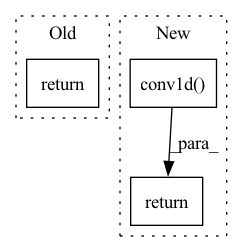

Pattern ID :27403

Before Change
else:
convfunc = F.conv2d
return convfunc(
input, global_rot_kernel, bias, stride, padding, dilation, groups
)
After Change
)
if conv1d:
return F.conv1d(
input=input,
weight=global_rot_kernel,
bias=bias,
stride=stride,
padding=padding,
dilation=dilation,
groups=groups,
)
else:
return F.conv2d(
input=input,
weight=global_rot_kernel,
In pattern: SUPERPATTERN
Frequency: 3
Non-data size: 3
Instances
Fragment ID: 81483103
Project Name: speechbrain/speechbrain
Commit Name: 4aa1f4852a671bbf5fe6cac65cdc0e6cd471fdd1
Time: 2021-01-02
Author: titouan.parcollet@univ-avignon.fr
File Name: speechbrain/nnet/quaternion_networks/quaternion_ops.py
M Class Name: AnonimousClass
N Class Name: AnonimousClass
M Method Name: quaternion_conv_rotation_op(13)
N Method Name: quaternion_conv_rotation_op(13)
M Parent Class:
N Parent Class:
M File Name: speechbrain/nnet/quaternion_networks/quaternion_ops.py
N File Name: speechbrain/nnet/quaternion_networks/quaternion_ops.py
M Start Line: 372
M End Line: 501
N Start Line: 374
N End Line: 513
'>
Before Change
Returns
filtered (torch.tensor (shape=(batch, time)))
return nanfilter(signals, win_length, nanmean)
def median(signals, win_length):
After Change
ones_kernel = torch.ones(signals.size(1), 1, win_length, device=signals.device)
// Perform sum pooling
sum_pooled = F.conv1d(
masked_x,
ones_kernel,
stride=1,
padding=win_length // 2,
)
// Count the non-masked (valid) elements in each pooling window
valid_count = F.conv1d(
mask.float(),
ones_kernel,
stride=1,
padding=win_length // 2,
)
valid_count = valid_count.clamp(min=1) // Avoid division by zero
// Perform masked average pooling
avg_pooled = sum_pooled / valid_count
// Fill zero values with NaNs
avg_pooled[avg_pooled == 0] = float("nan")
return avg_pooled.squeeze(1)
def median(signals, win_length):
'>
Fragment ID: 81483106
Project Name: maxrmorrison/torchcrepe
Commit Name: 443aa38be220020b2b4b5c5ab1f558c797e6ff12
Time: 2023-04-07
Author: lengyue@lengyue.me
File Name: torchcrepe/filter.py
M Class Name: AnonimousClass
N Class Name: AnonimousClass
M Method Name: mean(2)
N Method Name: mean(2)
M Parent Class:
N Parent Class:
M File Name: torchcrepe/filter.py
N File Name: torchcrepe/filter.py
M Start Line: 22
M End Line: 22
N Start Line: 23
N End Line: 56
'>
Before Change
else:
convfunc = F.conv2d
return convfunc(
input, cat_kernels_4_quaternion, bias, stride, padding, dilation, groups
)
After Change
)
if conv1d:
return F.conv1d(
input=input,
weight=cat_kernels_4_quaternion,
bias=bias,
stride=stride,
padding=padding,
dilation=dilation,
groups=groups,
)
else:
return F.conv2d(
input=input,
weight=cat_kernels_4_quaternion,
'>
Fragment ID: 81483104
Project Name: speechbrain/speechbrain
Commit Name: 4aa1f4852a671bbf5fe6cac65cdc0e6cd471fdd1
Time: 2021-01-02
Author: titouan.parcollet@univ-avignon.fr
File Name: speechbrain/nnet/quaternion_networks/quaternion_ops.py
M Class Name: AnonimousClass
N Class Name: AnonimousClass
M Method Name: quaternion_conv_op(11)
N Method Name: quaternion_conv_op(11)
M Parent Class:
N Parent Class:
M File Name: speechbrain/nnet/quaternion_networks/quaternion_ops.py
N File Name: speechbrain/nnet/quaternion_networks/quaternion_ops.py
M Start Line: 511
M End Line: 577
N Start Line: 523
N End Line: 601